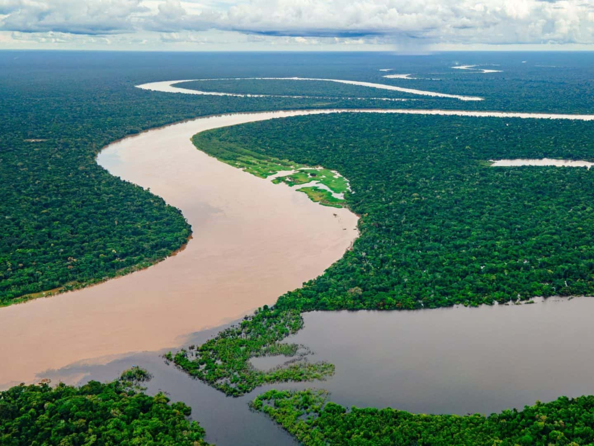

O Amazonas é o maior estado do Brasil em extensão territorial e está localizado na região Norte do país. Conhecido por abrigar grande parte da Floresta Amazônica, o estado possui uma enorme biodiversidade, com milhares de espécies de animais e plantas. Sua capital, Manaus, é um importante centro econômico e cultural da região. O Amazonas também é famoso pelos seus rios, especialmente o Rio Amazonas, considerado um dos maiores do mundo. A cultura amazonense é rica em tradições indígenas, festas populares e culinária típica, com pratos feitos à base de peixes e frutas regionais. Além da importância ambiental, o estado tem grande destaque no turismo ecológico, atraindo visitantes interessados em conhecer a floresta, os rios e a natureza exuberante da Amazônia.
